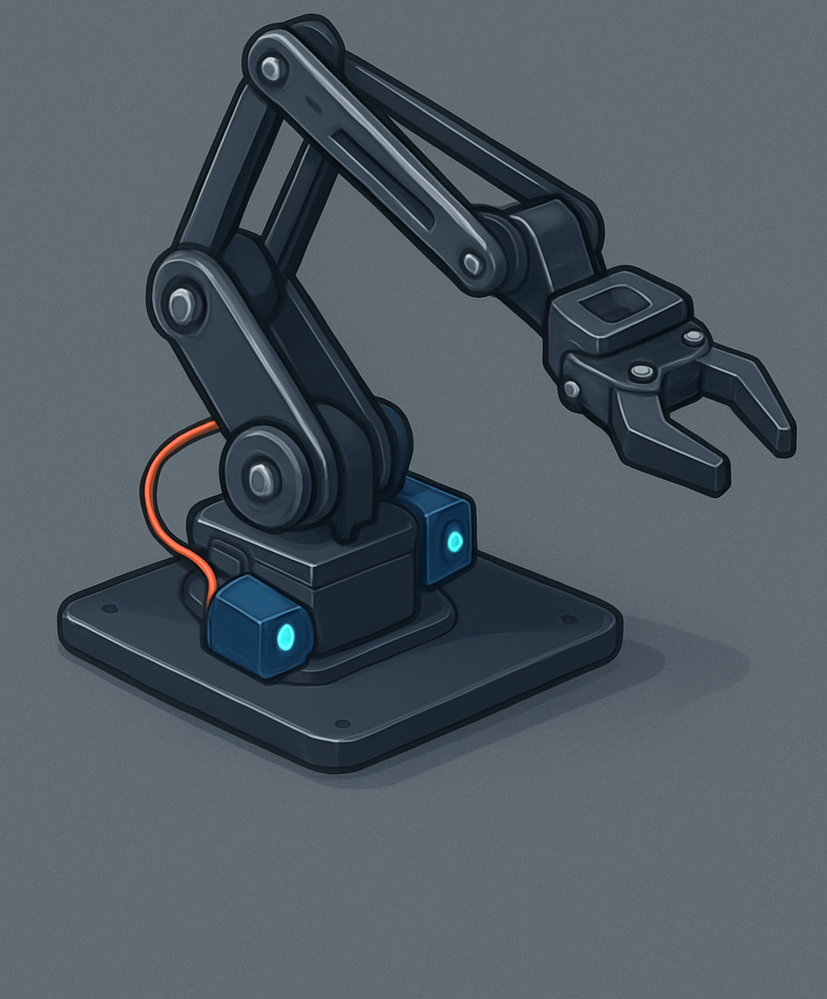

Your Guide to Building and Controlling Your Robotic Arm!
Hello and welcome to the exciting world of robotics! This kit provides everything you need to build and program your own 4-degrees-of-freedom robotic arm. It's an excellent way to learn about mechanics, electronics, and coding.
This comprehensive manual will guide you through the assembly process step-by-step, from meticulously putting the pieces together to uploading the code that brings your arm to life. Get ready to create, innovate, and have fun!
To ensure a smooth and enjoyable building process, please gather these common tools before you begin:
Before you embark on the assembly, carefully check that you have all the components listed below. Compare them with the illustrative image to ensure nothing is missing from your kit.
| Component | Description | Quantity |
|---|---|---|
| Acrylic Arm Pieces | Precisely laser-cut parts forming the arm's structural frame. | 1 set |
| SG90/MG90S Servo Motors | Compact and efficient motors that control each joint's movement. | 4 |
| Arduino UNO | The versatile microcontroller, serving as the central "brain" of your arm. | 1 |
| PCA9685 Servo Driver | A powerful 16-channel, 12-bit PWM/Servo driver for precise motor control. | 1 |
| Screws & Nuts | Various sizes of fasteners essential for secure assembly. | 1 set |
| Joystick Module | An intuitive input device for manual, real-time control of the arm's movements. | 1 |
| Jumper Wires (Male-Male, Male-Female) | Assorted wires for making all the necessary electrical connections. | 1 set |
| USB Cable (Type A to B) | To establish communication and power between your Arduino and computer. | 1 |
Follow these detailed steps carefully to assemble the mechanical structure of your robotic arm. Precision in each step will ensure optimal performance.
Instruction: Begin by securely attaching the large, circular base plate to the vertical stand using the provided longer screws and nuts. This forms the stable and rigid foundation for your arm, allowing for smooth rotation.
Instruction: Insert the first servo (designated for base rotation) into its specially designed slot on the vertical stand. Secure it firmly with the small screws. It's crucial to ensure the servo horn is centered at 90 degrees before attaching any acrylic pieces to it for accurate movement.
Instruction: Proceed to mount the remaining three servos (shoulder, elbow, and claw) into their respective arm segments. As you connect each segment, carefully attach the previous servo's horn to the next arm piece. Work your way sequentially from the shoulder to the claw, ensuring snug fits at each joint.
Instruction: The final servo controls the gripper. Mount this servo securely to the end of the last arm segment. Then, carefully attach the two claw pieces to its horn. Gently test that the claw opens and closes smoothly without any binding, indicating proper alignment.
Carefully follow this wiring diagram. Proper connections are absolutely vital for your arm to function correctly and avoid damage to components. Pay close attention to power and data lines, and double-check each connection.
The 4-DOF Robotic Arm comes with an advanced web-based control interface that allows precise control over each joint. The system consists of two main components:
Before using the web controller, ensure you have:
The web interface provides several ways to control your robotic arm:
The controller uses modern web technologies to communicate with your robotic arm:
SX:YYY where:
S1:090 sets servo 1 to 90 degreesIf you encounter issues with the web controller:
Pro Tip: Use the serial monitor in the controller to debug communication issues. The clear console button helps keep the log clean and focused on current operations.
#include <Wire.h> // Required for I2C communication with PCA9685
#include <Adafruit_PWMServoDriver.h> // Library to control the PCA9685 board
// --- Define Servo Driver Object ---
// Initialize the PCA9685 driver with its default I2C address, which is 0x40.
Adafruit_PWMServoDriver pwm = Adafruit_PWMServoDriver();
// --- Servo Pulse Lengths ---
// These values are crucial as they define the minimum and maximum pulse lengths
// (out of 4096 total pulse steps) that correspond to 0 and 180 degrees for your servos.
// You may need to slightly adjust these SERVOMIN and SERVOMAX values based on
// the specific characteristics of your SG90 or MG90S servo motors for optimal range.
#define SERVOMIN 150 // Minimum pulse length count for 0 degrees (typically 150)
#define SERVOMAX 600 // Maximum pulse length count for 180 degrees (typically 600)
// --- Define Servo Channels (on PCA9685 board) ---
// These integers specify which physical channel on the PCA9685 board each servo
// is connected to. Ensure these match your actual wiring setup.
int basePin = 0; // Servo for the base rotation (connected to PCA9685 channel 0)
int shoulderPin = 1; // Servo for the shoulder joint (connected to PCA9685 channel 1)
int elbowPin = 2; // Servo for the elbow joint (connected to PCA9685 channel 2)
int clawPin = 3; // Servo for the claw/gripper mechanism (connected to PCA9685 channel 3)
// --- Define Joystick Pins (on Arduino UNO) ---
// These define the analog input pins on the Arduino UNO where the joystick's
// X and Y axis outputs are connected. A3 is used for an optional button.
int joystickX = A0; // Analog pin for joystick X-axis (will control the base servo)
int joystickY = A1; // Analog pin for joystick Y-axis (will control shoulder and elbow servos)
int clawButtonPin = A3; // Digital pin for an optional button to control the claw
// --- Variables to store current servo angles ---
// These variables will hold the current target angle for each servo, ranging from 0 to 180 degrees.
// They are initialized to a neutral (90-degree) or open (claw) position.
int baseAngle = 90; // Initial angle for base (center position)
int shoulderAngle = 90; // Initial angle for shoulder joint
int elbowAngle = 90; // Initial angle for elbow joint
int clawAngle = 90; // Initial angle for claw (open position)
void setup() {
Serial.begin(9600); // Initialize serial communication at 9600 baud rate for debugging messages
Serial.println("4DOF Robotic Arm Ready!"); // Print a startup message to the Serial Monitor
pwm.begin(); // Begin communication with the PCA9685 board
pwm.setPWMFreq(60); // Set the PWM frequency to 60 Hz, which is standard and suitable for most hobby servos.
// Set initial position for all servos to ensure they are in a defined state upon startup.
// This helps prevent sudden movements or starting in an undesirable position.
setServoAngle(basePin, baseAngle);
setServoAngle(shoulderPin, shoulderAngle);
setServoAngle(elbowPin, elbowAngle);
setServoAngle(clawPin, clawAngle);
// Initialize the claw button pin. INPUT_PULLUP enables an internal pull-up resistor,
// meaning the pin will be HIGH by default and go LOW when the button is pressed (connected to GND).
pinMode(clawButtonPin, INPUT_PULLUP);
}
void loop() {
// --- Read Joystick Values ---
// analogRead() reads the voltage on the specified analog pin and returns a value
// between 0 (0V) and 1023 (5V). These values represent the joystick's position.
int xVal = analogRead(joystickX);
int yVal = analogRead(joystickY);
// digitalRead() reads the state of the digital pin (HIGH or LOW).
int buttonState = digitalRead(clawButtonPin); // Read the state of the claw button
// --- Map Joystick Values to Servo Angles ---
// The map() function is used to scale a number from one range to another.
// Here, joystick values (0-1023) are mapped to servo angles (0-180 degrees).
// The base servo's angle is controlled by the joystick's X-axis.
baseAngle = map(xVal, 0, 1023, 0, 180);
// The shoulder angle is controlled by the joystick's Y-axis. You might need to
// adjust the 0-180 range based on your arm's physical movement limits to prevent strain.
shoulderAngle = map(yVal, 0, 1023, 0, 180);
// For simplicity, the elbow servo currently follows the shoulder's movement.
// To add independent elbow control, you could connect another potentiometer or
// joystick axis to a new analog pin and map its value to elbowAngle.
elbowAngle = map(yVal, 0, 1023, 0, 180);
// --- Control the Claw with a Button ---
// This conditional statement checks the state of the claw button.
// If the button is pressed (LOW, due to INPUT_PULLUP), the claw closes.
// Otherwise (button not pressed, HIGH), the claw opens.
// Adjust 180 and 90 degrees as needed for your specific claw mechanism's open/close angles.
if (buttonState == LOW) { // Button is pressed
clawAngle = 180; // Close the claw (e.g., servo moves to 180 degrees)
} else {
clawAngle = 90; // Open the claw (e.g., servo moves to 90 degrees)
}
// --- Write New Angles to Servos ---
// Update the position of each servo with the newly calculated angles.
setServoAngle(basePin, baseAngle);
setServoAngle(shoulderPin, shoulderAngle);
setServoAngle(elbowPin, elbowAngle);
setServoAngle(clawPin, clawAngle);
delay(15); // A short delay is added to prevent excessive servo updates, which can cause
// jitter, consume unnecessary power, and make movements less smooth.
}
/**
* @brief Sets a specific servo's angle using the PCA9685 driver.
* This function converts a human-readable angle (0-180 degrees) into the
* pulse length value required by the PCA9685 board to position the servo.
* @param servoChannel The channel number on the PCA9685 board (0-15) where the servo is connected.
* @param angle The desired angle for the servo, ranging from 0 to 180 degrees.
*/
void setServoAngle(uint8_t servoChannel, int angle) {
// Map the input angle (0-180) to the corresponding servo pulse length range
// defined by SERVOMIN and SERVOMAX. This translates a logical angle to a
// hardware-specific PWM value.
uint16_t pulselen = map(angle, 0, 180, SERVOMIN, SERVOMAX);
// Send the calculated PWM pulse length to the specified PCA9685 channel,
// commanding the servo to move to the desired position.
pwm.setPWM(servoChannel, 0, pulselen);
}
Encountered a problem during assembly or operation? Don't worry, it's a common part of building. Here are some common issues and their effective solutions to get your arm working smoothly.